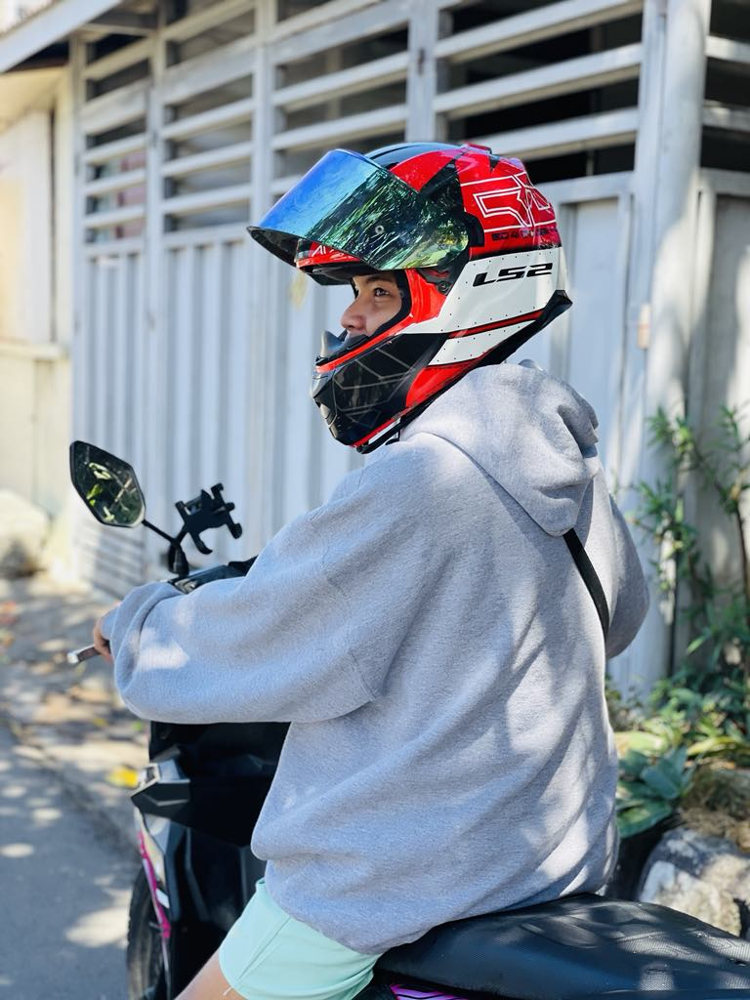
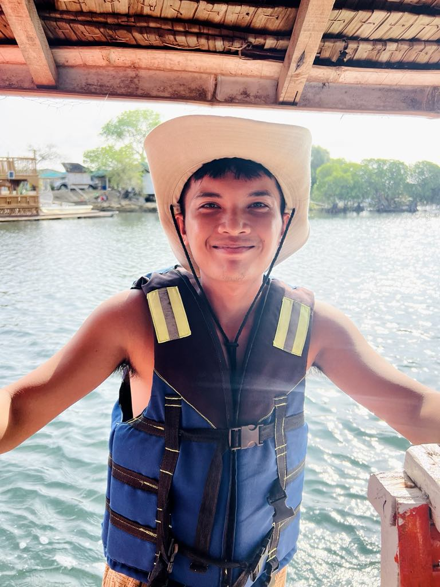

My Project

A web developer that is adept in using contemporary technologies like HTML, CSS, JavaScript, and different frameworks to create dynamic and responsive websites. Committed to providing high-performance online solutions with a focus on accessibility, functionality, and user experience. acquiring new skills and adjusting to emerging trends in order to deliver creative digital experiences.
Download CV

"Hello! My name is Kurt Jason Apun. I am a third-year Computer Science student who enjoys web designing. I like making websites that are simple, clean, and easy to use. I know how to work with HTML, CSS, and JavaScript, and I always try to learn new things to get better. I am a creative and hardworking person. I enjoy solving problems and finding new ideas. I believe in being honest, doing my best, and always improving myself. In my free time, I like drawing, playing games, and spending time outdoors. I come from a small, supportive family. My parents taught me to work hard, stay kind, and follow my dreams. Thanks to them, I have the courage to do what I love today."
Read MoreWeb Design (HTML, CSS, JavaScript) Basic Graphic Design (Canva, Figma) Responsive Web Development Problem-Solving and Debugging Teamwork and Communication Skills
Read MoreAs of now, I have not attended any formal trainings related to my course. However, I continue to learn through self-study, online tutorials, and personal projects to improve my skills.
Read MoreComputer Literacy Training Program - Adamson University Computer System Servicing NC II - TESDA at International Electronics and Technical Institute (Las Piñas), Inc.
Read More
Throughout my journey as a web developer, I faced challenges like debugging complex codes, staying updated with rapidly evolving technologies, and balancing multiple projects while studying. Each challenge taught me perseverance, attention to detail, and the value of continuous learning. Mistakes became stepping stones, helping me improve my coding logic, design sense, and problem-solving skills.
In the future, I aim to specialize in full-stack development and explore emerging fields like AI integration and cloud computing. I plan to attend tech conferences, earn certifications, and build a professional portfolio showcasing advanced projects. Ultimately, my dream is to establish my own tech startup that empowers businesses with creative and functional digital solutions.
You can view or download my resume to learn more about my educational background, skills, and work experiences.
Download Resume